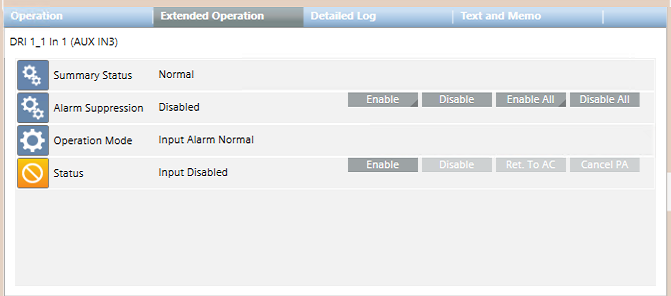
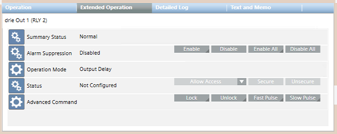

SiPass Auxiliary Objects
The section presents a description of the SiPass auxiliary objects (inputs/outputs) and the related control commands available from the Desigo CC management station. These inputs/outputs can be used to connect optional external devices such as buzzers, horn, lights, and elevators. For UL/ULC Access Control compliance information, see Notice for UL/ULC Norms Compliance.
SiPass Auxiliary Input Properties and Commands

The following table explains the available commands for auxiliary inputs.
Command | Description |
|---|---|
Disable | Permanently excludes the input from the system. This command overrides any programmed enable/disable schedule defined in SiPass. |
Enable | Permanently includes the input in the system. This command overrides any programmed enable/disable schedule defined in SiPass. |
Cancel PA | Cancels the Permanent Action (PA) of manual Enable or Disable. This command does not change the current input status, but removes the permanent effect of the latest Enable/Disable command. This allows a subsequent programmed action to complete successfully. |
Return to AC | Returns to Access Control (AC) the input control with immediate effect. This command cancels the latest Enable/Disable command and updates the input status to reflect the current programmed schedule in SiPass. |
NOTE: The above commands will not have an effect if the input is configured in SiPass with Operation Mode = InputDisabled.
SiPass Auxiliary Output Commands

The following table explains the available output commands.
Door Command | Description |
|---|---|
Secure | Permanently sets the relay output to the secure state (default condition, which can be configured as normally open or normally closed). This command overrides the programmed secure/unsecure schedule that may be defined in the SiPass configuration. |
Unsecure | Permanently sets the relay output to the unsecure state (as opposite to the configured secure state). This command overrides the programmed secure/unsecure schedule that may be defined in the SiPass configuration. |
Allow Access | Temporarily sets the relay output to the unsecure state to allow an access. The activation delay is programmed in the SiPass configuration. |
Allow Access > Cancel PA | Cancels the Permanent Action (PA) of manual Secure or Unsecure. This command does not change the current output status, but removes the permanent effect of the latest Secure/Unsecure command. This allows a subsequent programmed action to complete successfully. |
Allow Access > Return to AC | Returns to Access Control (AC) the output control with immediate effect. This command cancels the latest Secure/Unsecure command and results in the output status being updated as necessary to reflect the current programmed schedule. |
Allow Access > Single Pulse | Set the relay output to the unsecure state for 3 sec, and then back to secure. |
Allow Access > Toggle | Inverts the status of the relay output. |
Lock | Sets the relay output to the secure state for a specified a period of time (hhh:mm:ss). |
Unlock | Sets the relay output to the unsecure state for a specified a period of time (hhh:mm:ss). |
Fast Pulse | Sends out a series of high-frequency pulses (1-sec period) for a specified period of time (hhh:mm:ss). |
Slow Pulse | Sends out a series of low-frequency pulses (2-sec period) for a specified period of time (hhh:mm:ss). |